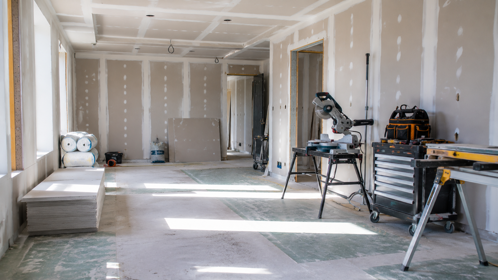

Construction, rénovation énergétique et travaux publics créent des opportunités pour des profils manuels, techniques et organisés.
Des milliers de postes non pourvus dans tous les corps de métier. Embauche rapide pour les profils formés.
24 000€ à 45 000€ selon le métier et l'expérience. Conducteur de travaux : 40 000 à 65 000€.
Le plan de rénovation des bâtiments crée des milliers d'emplois dans l'isolation, le chauffage et les énergies renouvelables.
Beaucoup de professionnels du BTP créent leur propre entreprise artisanale. Un secteur où l'entrepreneuriat est naturel.

Selon votre expérience et votre niveau de départ, plusieurs diplômes sont accessibles par formation ou par VAE.
Et tout autre diplôme du domaine des sciences techniques et industrielles — du CAP au diplôme d'ingénieur. Contactez-nous pour vérifier.
Diagnostic gratuit pour analyser votre situation et construire votre plan de reconversion. Sans engagement, 100% en visio.
📩 Nous contacter →